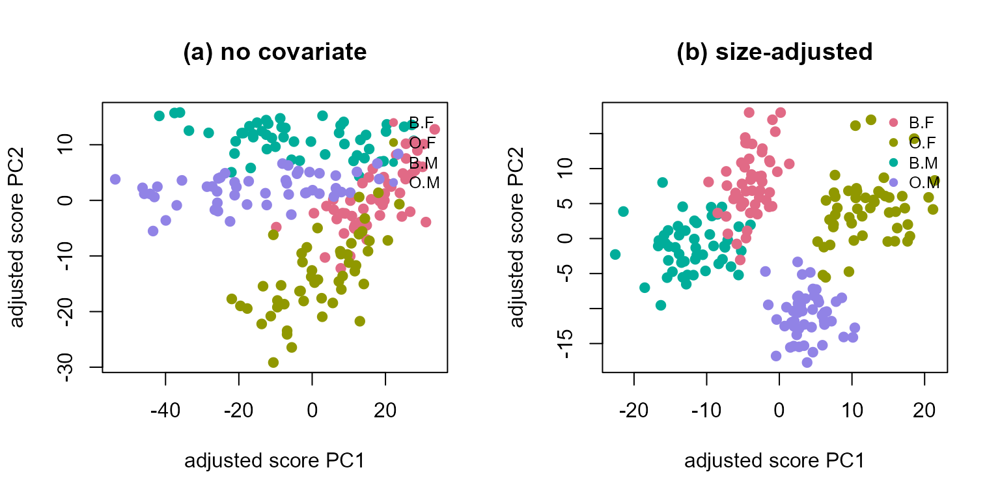

NMF-GMM: Covariate-Adjusted Model-Based Clustering with nmfkc
Source:vignettes/nmf-gmm-with-nmfkc.Rmd
nmf-gmm-with-nmfkc.RmdThe NMF-GMM family is experimental and still under development. Argument names, defaults and the contents of the returned objects are not yet stable, and may change in a future version. Code written against them today may need adjusting after an update. The rest of the package does not carry this caveat.
Introduction
NMF with covariates approximates the data by \(Y\approx X\Theta A = XB\): a non-negative
basis \(X\) and covariate-driven scores
\(B=\Theta A\). NMF-RE
(nmfre()) adds a single Gaussian random effect to the
scores. NMF-GMM goes one step further and places a
\(K\)-component Gaussian
mixture on the scores, \[\boldsymbol
b_n\mid(z_n{=}k)\sim N_Q(C\boldsymbol
a_n+\boldsymbol\mu_k,\Sigma_k),\qquad
\boldsymbol y_n = X\boldsymbol b_n+\boldsymbol\varepsilon_n,\quad X\ge
0,\] so that regression (the covariate term \(C\boldsymbol a_n\), with \(C=\Theta\)) and model-based clustering (the
mixture, through the posterior responsibilities) are fitted at
once. \(K=1\) is NMF-RE.
Why fit them jointly? Because adjusting first and clustering afterwards can displace the class means by an omitted-variable bias — the omitted variable being the class. Keeping the covariate and the mixture lets one ask whether latent subpopulations persist after adjusting for a covariate. This vignette shows the effect on the Leptograpsus crabs data, where overall size is confounded with the four species–sex groups.
As elsewhere in the package, nmf.gmm() performs
optimization only; use nmf.gmm.inference() for standard
errors of \(C\) and
nmf.gmm.select() to choose \(K\).
1. Data: Leptograpsus crabs
The crabs data (MASS) holds five
morphological measurements on 200 crabs: two species (blue / orange)
\(\times\) two sexes, 50 each. The rows
of \(Y\) are the five measurements; the
columns are crabs. A natural nuisance covariate is overall
size (the average measurement), which is strongly
confounded with the four groups.
library(nmfkc)
library(MASS)
#> Warning: package 'MASS' was built under R version 4.4.3
data(crabs)
meas <- c("FL", "RW", "CL", "CW", "BD")
Y <- t(as.matrix(crabs[, meas])) # 5 x 200 (non-negative)
grp <- interaction(crabs$sp, crabs$sex) # 4 species-sex groups
crab_df <- data.frame(size = rowMeans(crabs[, meas])) # one row per crab
## Warm-start the mixture from a plain rank-3 NMF basis. Anchoring every fit
## on the same non-negative parts makes the runs reproducible and comparable,
## and keeps the score space fixed across the with/without-covariate contrast.
X0 <- nmfkc(Y, rank = 3, seed = 1)$X
#> Y(5,200)~X(5,3)B(3,200)...0sec2. Clustering without adjusting for size
With no covariate (the default A = NULL supplies the
intercept row), NMF-GMM is a Gaussian mixture on the raw scores. Size
dominates the leading score directions, so the mixture tends to split
the crabs by size, not by species/sex.
fit_a <- nmf.gmm(Y, rank = 3, K = 4, cov = "tied", X.init = X0, seed = 1)
ari <- function(cl) round(nmfkc:::.nmfgmm.ARI(cl, grp), 3)
ari(fit_a$cluster) # adjusted Rand index vs the four species-sex groups
#> [1] 0.283The recovery of the four groups is poor: the clustering is largely picking up the size gradient.
3. Clustering while adjusting for size
Now pass size as a covariate. A accepts a one-sided
formula evaluated in data: the design
matrix is built with model.matrix(), the intercept row is
added, and the covariate columns are centered and scaled by default (a
factor covariate would expand to centered indicator rows the same way).
The covariate term \(C\boldsymbol a_n\)
absorbs the size effect on the scores, and the mixture clusters the
size-adjusted structure — recovering the species–sex
groups.
fit_b <- nmf.gmm(Y, ~ size, data = crab_df, rank = 3, K = 4, cov = "tied",
X.init = X0, seed = 1)
ari(fit_b$cluster)
#> [1] 0.861Adjusting for size inside the mixture lifts the adjusted Rand index sharply. The confusion table against the true groups shows nearly clean recovery:
table(class = fit_b$cluster, group = grp)
#> group
#> class B.F O.F B.M O.M
#> 1 44 0 2 0
#> 2 0 3 0 50
#> 3 0 47 0 0
#> 4 6 0 48 0print() / summary() give the model-based
clustering report (mixing proportions, cluster sizes, BIC/ICL):
fit_b
#> NMF-GMM: Gaussian-mixture latent-class NMF with covariates
#> Y(5,200) ~ X(5,3) [K=4, tied]
#> K=4 components, rank Q=3, covariance=tied
#> logLik=-679.46, BIC=1539.06, ICL=1557.72 (params=34)
#> Convergence: 8147 / 200000 (converged) epsilon = 1e-07
#> Mixing proportions (xi): 0.236 0.268 0.231 0.265
#> Cluster sizes:
#> cluster
#> 1 2 3 4
#> 46 53 47 544. The matched two-stage baseline:
nmf.gmm.twostage()
The obvious alternative to adjusting while clustering is
adjusting first: regress the scores on size, then cluster the
residuals. nmf.gmm.twostage() packages that recipe with
everything held equal to the joint fit — same basis initialization, same
mixture, same settings — so that only the order of
adjustment and clustering differs:
fit_c <- nmf.gmm.twostage(Y, ~ size, data = crab_df, rank = 3, K = 4,
cov = "tied", X.init = X0, seed = 1)
c(two.stage = ari(fit_c$cluster), joint = ari(fit_b$cluster))
#> two.stage joint
#> 0.766 0.861The two-stage route falls short of the joint fit, and in the predicted direction: fitted blind to the class, the stage-one regression charges to size part of what separates the species–sex groups, so the residuals it hands to the mixture have had some of the class contrast subtracted along with the nuisance (Satoh 2026, Proposition 4). When the covariate is (near-)mean-independent of the class — for instance under a balanced crossed design — the displacement vanishes and the two routes agree; the gap seen here is bought by the size–class association in the crabs.
5. Choosing the number of components:
nmf.gmm.select()
nmf.gmm.select() sweeps \(K\) and reports BIC / ICL (and, given known
labels, the ARI). On crabs the information criteria mildly
over-select (they prefer \(K=5\)), while clustering quality (ARI)
peaks at the true \(K=4\) — a
documented feature of BIC/ICL on real, slightly non-Gaussian class
structure.
sel <- nmf.gmm.select(Y, A = fit_b$A, rank = 3, K = 1:5, cov = "tied",
X.init = X0, truth = grp, verbose = FALSE)
sel
#> K logLik n.params BIC ICL ARI
#> 1 -970.1 22 2056.7 2056.7 NA
#> 2 -862.0 26 1861.8 1864.3 0.496
#> 3 -825.9 30 1810.8 1822.7 0.639
#> 4 -679.5 34 1539.1 1557.7 0.861
#> 5 -657.4 38 1516.1 1553.9 0.791
#> BIC selects K=5; ICL selects K=56. Inference on the covariate effect:
nmf.gmm.inference()
nmf.gmm.inference() reports Wald inference for the
covariate-coefficient matrix \(C\)
(\(=\Theta\)), conditional on the
estimated basis and mixture, with an outer-product mixture-information
standard error and a wild-bootstrap standard error / interval. Each
size row is the effect of size on the score of one
non-negative part.
fit_b <- nmf.gmm.inference(fit_b, Y, wild.B = 500, seed = 1) # A defaults to fit_b$A
subset(fit_b$coefficients, Covariate == "size")
#> Basis Covariate Estimate SE BSE z_value p_value
#> 4 Basis1 size 4.745859 0.6460162 0.2487612 7.346347 2.036977e-13
#> 5 Basis2 size 10.498300 0.3236286 0.2252803 32.439350 7.654835e-231
#> 6 Basis3 size 8.902747 0.4281325 0.2303515 20.794376 4.866465e-96
#> CI_low CI_high
#> 4 4.244660 5.262332
#> 5 10.083788 10.923858
#> 6 8.474334 9.382021The size coefficients are strongly positive on every part (larger crabs load more on all parts), confirming that size is exactly the nuisance the covariate term is meant to remove before clustering.
7. Visualizing the effect of adjustment
Projecting the covariate-adjusted scores \(\boldsymbol b_n - C\boldsymbol a_n\) onto their first two principal components, and colouring by the true group, makes the mechanism visible: without adjustment (left) the groups smear along a size axis; after adjustment (right) they separate.
Read the right-hand panel carefully, because the axes are not the
scores themselves. The model puts the covariate effect in the component
means, so the space the mixture acts in is the score with \(C\boldsymbol a_n\) removed — and that is
what plot() draws (its axis labels say
adjusted). The distinction is not cosmetic here:
sep2 <- function(M, g) { # between/within on the first 2 PCs
pc <- prcomp(t(M))$x[, 1:2, drop = FALSE]
gm <- do.call(rbind, lapply(split(as.data.frame(pc), g), colMeans))
B <- sum(table(g) * rowSums((gm - rep(colMeans(pc), each = nrow(gm)))^2))
W <- sum(vapply(split(as.data.frame(pc), g), function(d)
sum((as.matrix(d) - rep(colMeans(d), each = nrow(d)))^2), numeric(1)))
B / W
}
rbind(raw = c(a = sep2(fit_a$scores, grp), b = sep2(fit_b$scores, grp)),
adjusted = c(a = sep2(fit_a$scores - fit_a$C %*% fit_a$A, grp),
b = sep2(fit_b$scores - fit_b$C %*% fit_b$A, grp)))
#> a b
#> raw 0.8718784 0.6311105
#> adjusted 0.8718784 4.6808419The raw scores of the size-adjusted fit separate the four groups no better than those of the plain fit (0.64 either way). The vivid separation in the right-hand panel — 4.63 — is produced by the adjustment. In (a) the two rows agree exactly, because with no covariate \(C\boldsymbol a_n\) is a constant and subtracting it only shifts the cloud.
So the figure shows where the mixture is working, not that the scores themselves pull apart. The clustering gain is real and is measured by the ARI in Sections 3–4; the figure explains the mechanism behind it.
The plot() method with
type = "adjusted.scores" draws this directly (colouring by
the true group here rather than the fitted cluster):
op <- par(mfrow = c(1, 2))
plot(fit_a, type = "adjusted.scores", group = grp, main = "(a) no covariate")
plot(fit_b, type = "adjusted.scores", group = grp, main = "(b) size-adjusted")
par(op)Summary
| Step | Function | Purpose |
|---|---|---|
| 1 | nmf.gmm() |
Fit the covariate-adjusted score mixture (optimization
only; A may be a formula with data) |
| 2 | nmf.gmm.twostage() |
The matched adjust-then-cluster baseline (same basis, same mixture, order reversed) |
| 3 | nmf.gmm.inference() |
SEs / tests for the covariate coefficients \(C\) |
| 4 | nmf.gmm.select() |
Choose \(K\) by BIC / ICL (and ARI if labels are known) |
| — |
predict(), summary(),
plot()
|
Hard classes / responsibilities, report, EM convergence |
The message: clustering while adjusting for
a confounder (here, size) recovers the structure of interest (species
and sex) that clustering the raw scores misses — the adjusted Rand index
rises from about 0.25 to about 0.86, and beats the matched two-stage
pipeline, whose stage-one regression removes part of the class contrast
along with the nuisance. The covariance structure is controlled by
cov ("tied", "free", or the
isotropic "scalar", which at \(K=1\) is the nmfre()
model).
For methodological details see Satoh, K. (2026), NMF-GMM: A Gaussian-Mixture Latent-Class Extension of Non-negative Matrix Factorization with Covariates.